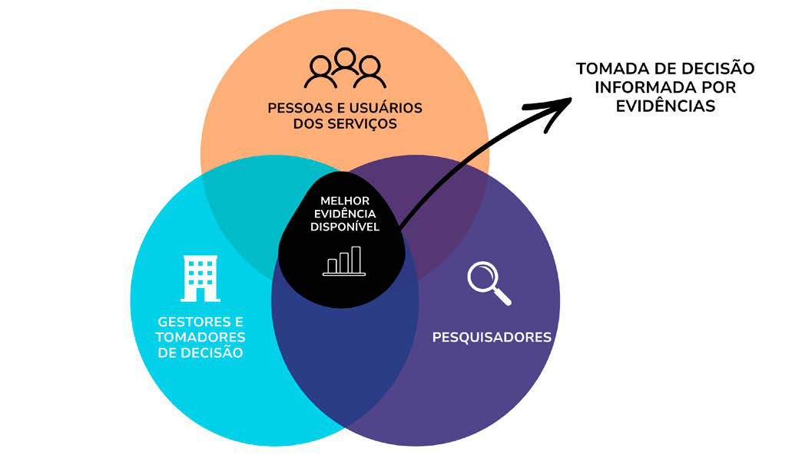

Módulo 2 | Aula 3
Aplicabilidade dos achados de sínteses de evidências
Uso de evidências científicas para a tomada de decisão
Como compreende o percurso entre a priorização de problemas, a produção de conhecimentos e a implementação de ações, a tomada de decisão informada por evidências requer colaboração entre atores sociais distintos, que produzirão ou consumirão o conhecimento, com estabelecimento de comunicação contínua e multidirecional, com foco no intercâmbio entre ambos (Sudsawad, 2007, CIHR, 2016). Também é necessário que considere que o processo de produção de conhecimentos deve ser orientado pelo contexto em que a prioridade é levantada e as ações que serão implementadas (Sudsawad, 2007).
Nesse sentido, a tomada de decisão informada por evidências contribui para o fortalecimento da qualidade das políticas públicas ao reduzir incertezas, aumentar a efetividade das intervenções e promover o uso mais eficiente dos recursos disponíveis, favorecendo assim maior transparência e legitimidade nos processos decisórios ao basear escolhas em conhecimentos sistematizados e contextualizados (WHO, 2021).
Figura 1 – Atores envolvidos na tomada de decisão informada por evidências.

Fonte: Elaborada pelas autoras (2026).